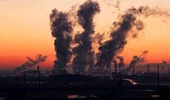
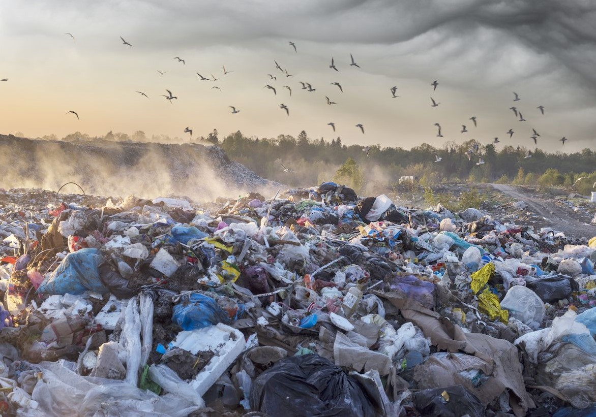

| Los principales ejemplos de energías sucias o contaminantes
Energía nuclear. La energía nuclear tiene un potencial destructivo alto por los residuos radioactivos que genera
Gas natural
Energía hidroeléctrica
Carbón
Petróleo |
Las principales fuentes de contaminación puntual del agua son las estaciones depuradoras y de tratamiento de aguas residuales, mientras que en el caso de la contaminación
difusa las principales fuentes son las actividades agrícolas y las centrales eléctricas alimentadas con combustibles fósiles |
Consecuensias
La contaminación del aire también puede aumentar el riesgo de sufrir cardiopatías,
accidentes cerebrovasculares y cáncer a lo largo del ciclo de vida.
 |
Causas
1 Almacenamiento incorrecto de productos y/o residuos en actividades industriales
2 Vertidos de residuos incontrolados
3 Escombros industriales
4 Bidones enterrados |
 |